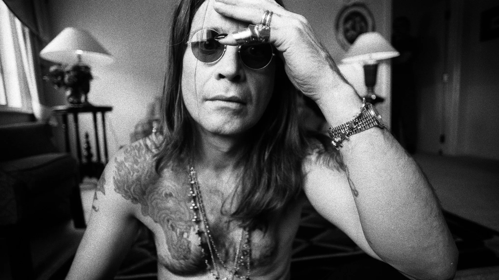
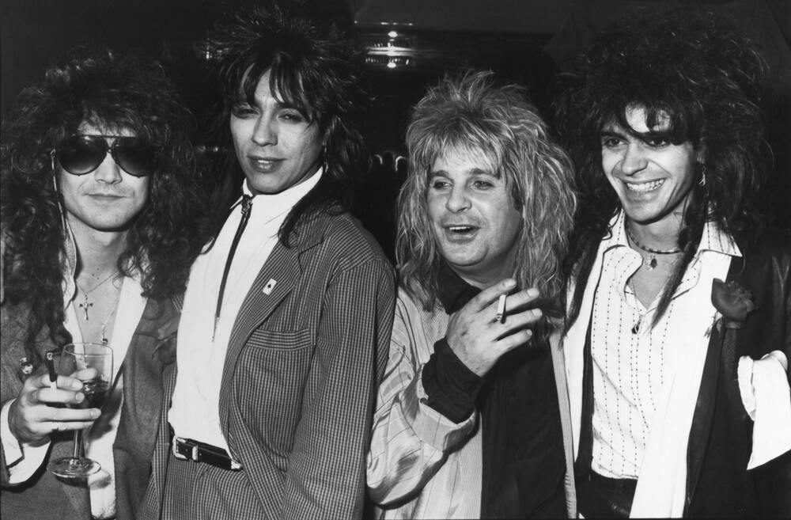
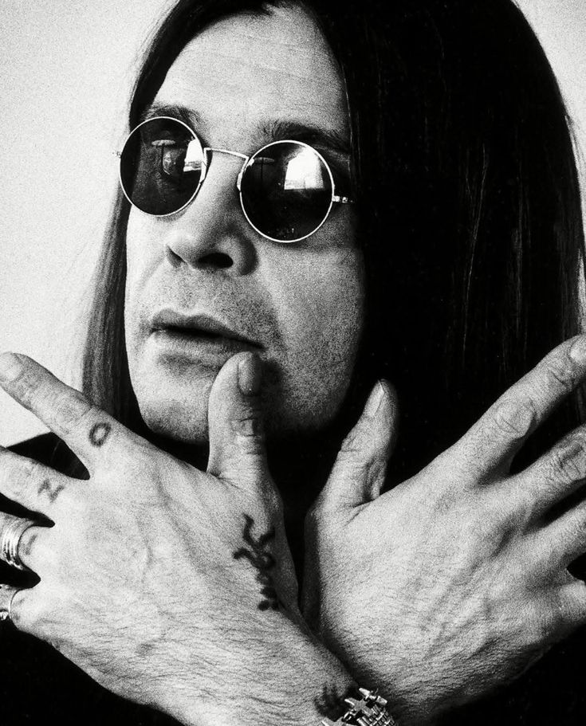
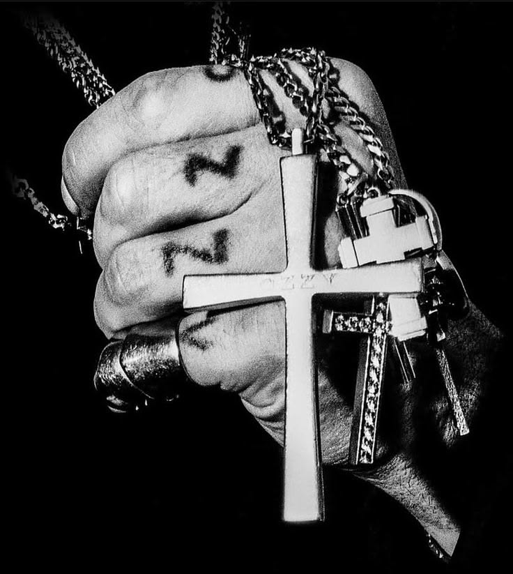

Ozzy Osbourne
Le premier album et Paranoid : l’acte fondateur Février 1970. Black Sabbath, le premier album, sort avec une pluie d’ouverture, une cloche lugubre et un riff de croque-mort. La voix d’Ozzy Osbourne flotte dessus comme un spectre. C’est ici que naît le heavy metal tel qu’on le connaît, pas chez Led Zeppelin, pas chez Deep Purple : chez quatre gamins de Birmingham qui voulaient faire peur. La même année sort Paranoid. « War Pigs », « Iron Man », le titre éponyme : trois des riffs les plus reconnaissables de l’histoire du rock en un seul disque. L’album dépasse toutes les attentes. Black Sabbath est désormais un phénomène. Les médias les accusent de satanisme. Le public se rue aux concerts. Suivent Master of Reality (1971), Vol. 4 (1972), Sabbath Bloody Sabbath (1973), Sabotage (1975). Ozzy Osbourne boit de plus en plus, rend les répétitions impossibles. En 1979, Tony Iommi le congédie. Geezer Butler, co-auteur de la plupart des textes et meilleur ami d’Ozzy, doit lui annoncer la nouvelle.

Qui est-il ?
Ozzy Osbourne, de son vrai nom John Michael Osbourne, est né le 3 décembre 1948 à Birmingham et mort le 22 juillet 2025. Chanteur fondateur de Black Sabbath, cofondateur du heavy metal, et icône solo avec Blizzard of Ozz, il aura traversé cinquante ans de rock sans jamais renier une once de chaos. Un gosse d’usine devenu Prince of Darkness. Une voix reconnaissable entre mille. Un survivant, jusqu’au bout.
Son histoire
En 2003, chute en quad dans son jardin. Côtes cassées, clavicule brisée, poumon perforé. Il revient. En 2019, autre chute à domicile : la colonne vertébrale cette fois. Opéré, vissé, patché. En janvier 2020, il annonce publiquement qu’il est atteint de la maladie de Parkinson. Tremblements, difficultés à marcher, à chanter par intermittence. La tournée mondiale « No More Tours 2 » est annulée en 2023. Mais il continue d’enregistrer. Ordinary Man (2020), avec Elton John et Post Malone, est accueilli comme une résurrection. Patient Number 9 (2022), avec Jeff Beck, Eric Clapton, Tony Iommi et Zakk Wylde, stupéfie les critiques. À 73 ans, Ozzy Osbourne sort l’un des albums les mieux reçus de sa carrière. En 2024, il est intronisé au Rock and Roll Hall of Fame en tant qu’artiste solo. Black Sabbath y avait été admis en 2006. Ozzy est l’un des rares musiciens à y figurer deux fois.

Héritage
Ce que le metal doit à Ozzy Osbourne Treize albums studio solo. Deux intronisations au Rock and Roll Hall of Fame. Une étoile sur le Hollywood Walk of Fame. Ces chiffres ne disent pas l’essentiel. Ce qu’Ozzy Osbourne a apporté au metal, c’est une preuve par l’exemple : on peut venir de nulle part, ne jouer d’aucun instrument, rater l’école, faire de la prison, et quand même fonder un genre musical. Cette vérité brute a inspiré des générations de groupes depuis les années 70. Sans Black Sabbath, pas de Metallica tel qu’on le connaît, pas de Ghost, pas de Korn, pas de Tool. J’ai photographié Iggy Pop à plusieurs reprises, un autre survivant de cette même époque, un homme qui partage avec Ozzy cette capacité à transformer la destruction personnelle en énergie scénique.

Le Rock
Ce que le metal doit à Ozzy Osbourne Treize albums studio solo. Deux intronisations au Rock and Roll Hall of Fame. Une étoile sur le Hollywood Walk of Fame. Ces chiffres ne disent pas l’essentiel. Ce qu’Ozzy Osbourne a apporté au metal, c’est une preuve par l’exemple : on peut venir de nulle part, ne jouer d’aucun instrument, rater l’école, faire de la prison, et quand même fonder un genre musical. Cette vérité brute a inspiré des générations de groupes depuis les années 70. Sans Black Sabbath, pas de Metallica tel qu’on le connaît, pas de Ghost, pas de Korn, pas de Tool. J’ai photographié Iggy Pop à plusieurs reprises, un autre survivant de cette même époque, un homme qui partage avec Ozzy cette capacité à transformer la destruction personnelle en énergie scénique.